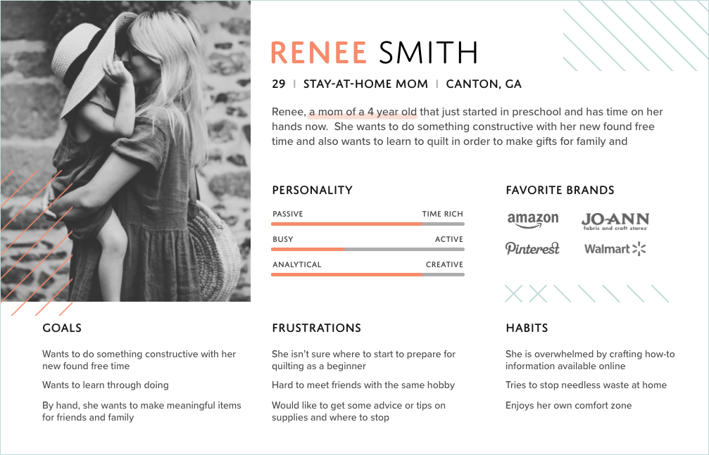
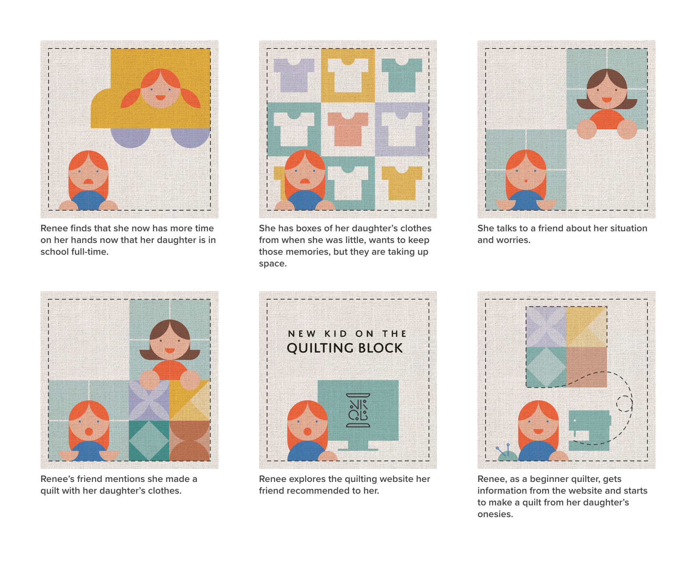
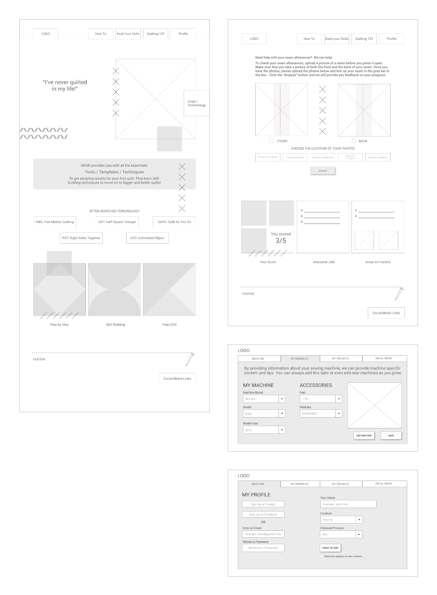
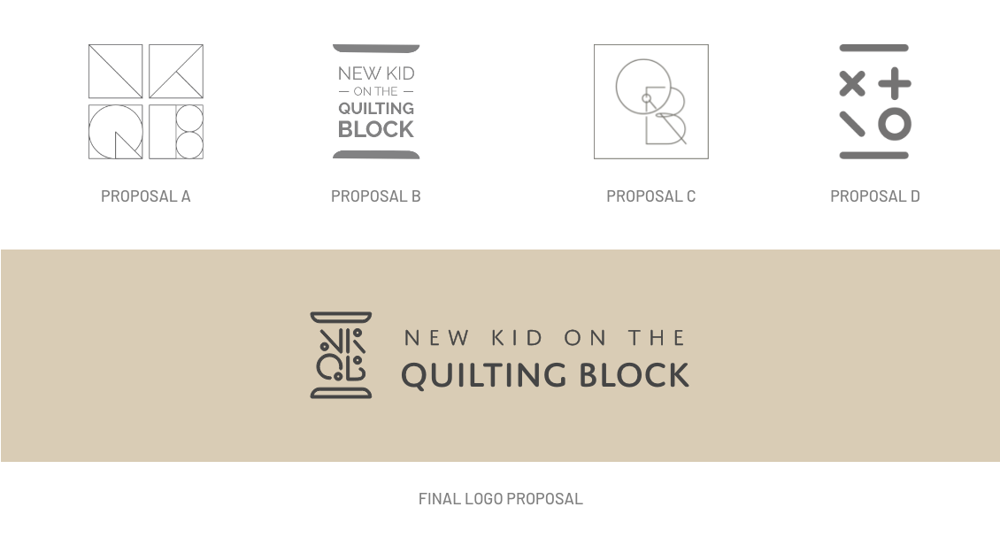
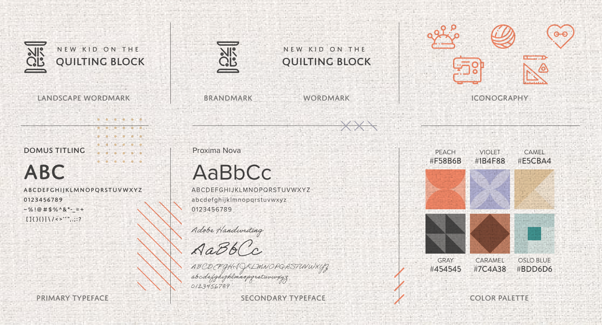
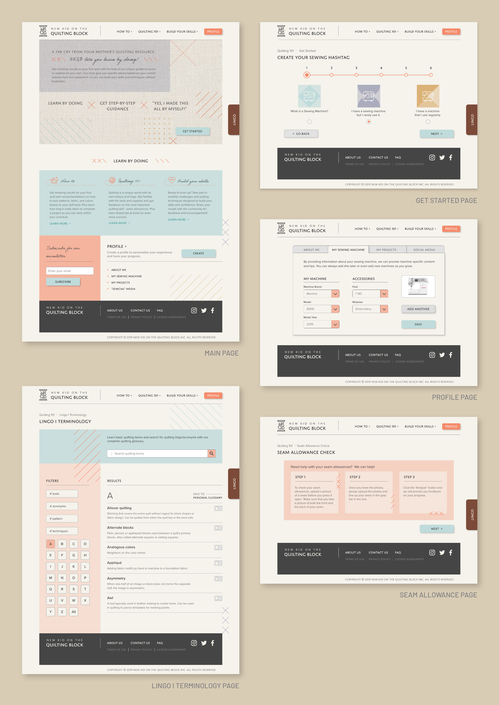

The quilting industry is doing a terrible job of attracting the under 45 sewists and many
still behave like they did in the 1970-80's
The largest percentage of crafters are between 18-34 years old (41%)
These crafters get most information online and from online videos
Maker culture emphasizes learning-through-doing (active learning) in a social environment
Additionally, there has been a renewed interest in hand made crafts as people are looking
for ways to personalize their belongings.
POV STATEMENT
New Kid on the Quilting Block will be designed to teach skill building quilting
techniques for new quilters. We have observed that most sites aren’t designed to step users through the quilting
process -
step by step - which often leads to more questions for new quilters.
RESEARCH
We launched a survey and completed one-on-one interviews with people who are currently
quilters or who are interested in learning to quilt to understand their challenges in getting started and learn
what they wished they could get help with.
Users were more interested in learning technical skills like 1/4" seam allowances than basic skills
Time Management was a obstacle to success
Finding patterns that match their skill levels causes frustrations for new quilters
USER PERSONA
Meet Renee! A busy stay-at-home mom who suddenly finds that she has more time on her
hands now that her daughter is in school full time. Renee is sentimental and has boxes of her daughters outfits
that she doesn’t want to get rid of, but is running out of room to store.

Renee talks to her friend who shows her a quilt she made with her favorite baby clothes. Renee is intrigued by
the idea - because it reuses the clothes she has in a meaningful way and it will be something that she can share
with her daughter when she is older. She finds NKQB and it delighted at the approach they take on teaching a
beginner!

IDEATION
We have observed that most quilting sites aren’t designed to step new users through the
process, which often causes confusion. The NKQB site will be designed to teach techniques to increase quilting
skills for new quilters.

BRANDING


HIGH FIDELITY MOCKUPS
